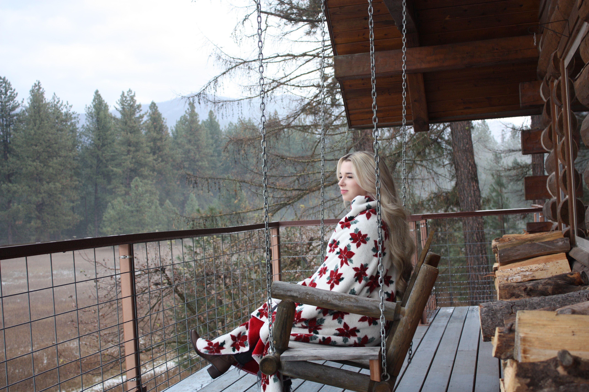

Our trip to Thompson Falls, Montana
We took our first family trip to Montana in early December, and it was the perfect Winter getaway! We stayed in a stunning cabin just ten minutes from the heart of Thompson Falls. Our family enjoyed scenic trail rides, cozy campfires under the stars, and had such a fun time exploring the quaint town!
Where We Stayed
We stayed in this beautiful 6 bedroom, 3 bathroom AirBNB on
Green Acres Ranch. The log home has plenty of space for the whole family,
and is extremely kid friendly! They have baby gates for the stairs and
the fireplace, a crib, pack n play, toys, a highchair, stroller, washer
and dryer, and an entire entertainment space downstairs with tons of
games, movies, and activities for the kids. There is a full kitchen
upstairs and a kitchenette downstairs, so this space would even be great
for hosting family reunions or for trips with the in-laws. The cabin has
the most amazing deck with a swing on the upper level where you can admire
the mountains, watch the wildlife, and enjoy your morning coffee.

Things To Do
Three Bandit Ranch is a local gem that promises unforgettable memories.
Riders of any experience level can saddle up and embark on trail rides
through Montana's stunning landscapes. They have several horses to choose
from and a great staff! Not only was our experience here so fun, but it was
Jake and Rheya's first time riding a horse, so it was super memorable!
Places to Eat
Coffee and breakfast at Scotchman's Coffee
925 W Main St, Thompson Falls, MT 59873
Lunch at Minnie's Montana Cafe
921 W Main St, Thompson Falls, MT 59873
Dinner at Big Eddy's
219 W Main St, Thompson Falls, MT 59873